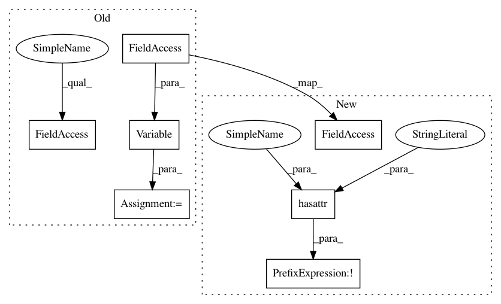

24edeb20221803c592d9bc2c4f428fb9697358b7,gpytorch/inference/posterior_models/exact_gp_posterior.py,_ExactGPPosterior,forward,#_ExactGPPosterior#,44
Before Change
test_test_covar = full_covar[n:, n:]
// Calculate posterior components
if self.alpha.numel():
alpha = Variable(self.alpha)
else:
alpha = gpytorch.exact_posterior_alpha(train_train_covar, train_mean, Variable(self.train_y))
self.alpha.resize_as_(alpha.data).copy_(alpha.data)
test_mean = gpytorch.exact_posterior_mean(test_train_covar, test_mean, alpha)
After Change
test_test_covar = full_covar[n:, n:]
// Calculate posterior components
if not hasattr(self, "alpha"):
self.alpha = gpytorch.exact_posterior_alpha(train_train_covar, train_mean, Variable(self.train_y))
test_mean = gpytorch.exact_posterior_mean(test_train_covar, test_mean, self.alpha)
test_covar = gpytorch.exact_posterior_covar(test_test_covar, test_train_covar,
train_test_covar, train_train_covar)
In pattern: SUPERPATTERN
Frequency: 3
Non-data size: 7
Instances
Project Name: cornellius-gp/gpytorch
Commit Name: 24edeb20221803c592d9bc2c4f428fb9697358b7
Time: 2017-08-25
Author: gpleiss@gmail.com
File Name: gpytorch/inference/posterior_models/exact_gp_posterior.py
Class Name: _ExactGPPosterior
Method Name: forward
Project Name: cornellius-gp/gpytorch
Commit Name: 24edeb20221803c592d9bc2c4f428fb9697358b7
Time: 2017-08-25
Author: gpleiss@gmail.com
File Name: gpytorch/inference/posterior_models/variational_gp_posterior.py
Class Name: _VariationalGPPosterior
Method Name: forward
Project Name: brian-team/brian2
Commit Name: b2614e6be454735b2e9caed9fc3a79dd7d64420d
Time: 2013-07-25
Author: marcel.stimberg@ens.fr
File Name: brian2/groups/group.py
Class Name: Group
Method Name: __init__